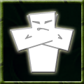

|
 |
Intimidate A monster with this ability has spent numerous hours practicing its maniacal screams, scary faces, or just plain size to a point that it can even scare other monsters. Creatures who are intimidated will weaken and perform poorly in front of the terrifying menace, unable to effectively attack or perform other tasks. Grunts who become intimidated will most certainly run away. Command: intim?idate This ability is based on: Effects of the intimidate ability:
|
Battlecry | Boss Monster | Bureaucracy | Dungeonmaster | Grunt Mastery | Hoarding | Inspire | Intimidate | Mentor | Spirituality | Warmonger